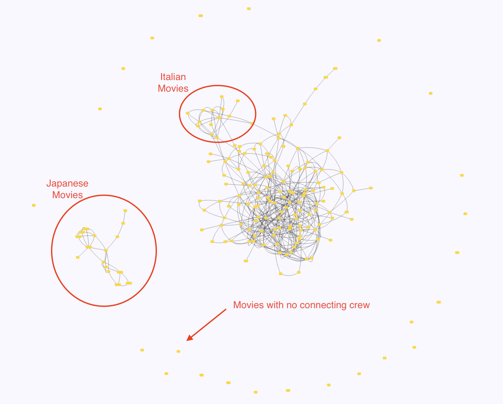

home | involvement | movie graph | movie/crew graph
I am a big fan of the show Mystery Science Theater 3000 (MST3K). I notice a lot of actors in the riffed movies showing up time and time again. Also as someone interested in numbers and computer programming, I decided to investigate this a little further. Using the IMDB API, I have collected data on the full staff from all of the orginal run (1988-1999), including the KTMA years and the movie. With this data I have determine that five actors have appeared in five different riffed movies. I created a data driven web page that displays the involvement of all the actors, directors and writers who have been involved with at least to separate riffed movies.
The most interesting aspect of this project is when you take a step back and try to look at is holistically. Being a computer science nerd, I think of this as a simple graph, where the verticies are the riffed movies, and the edges represent an actor, director or writer that was involved in both of the connected verticies.
You can explore this graph yourself, and zoom in or out and tug and pull on the verticies to get a better feel for the graph. The graph takes some time to load, so be patient, there is a lot of data being organized and layed out.
While this representation is simple enough, I was also interedted in seeing just who was the connection between the two movies. So in another for of the graph I added the crew member that worked on both movies as a vertex (visualized in a different color and shape), with the edge being the connection between the crew member and the movie they were involved with.
You can explore this version of graph as well. This graph takes even longer to load (since in now has separate verticies for the connecting crew members. So be patient.